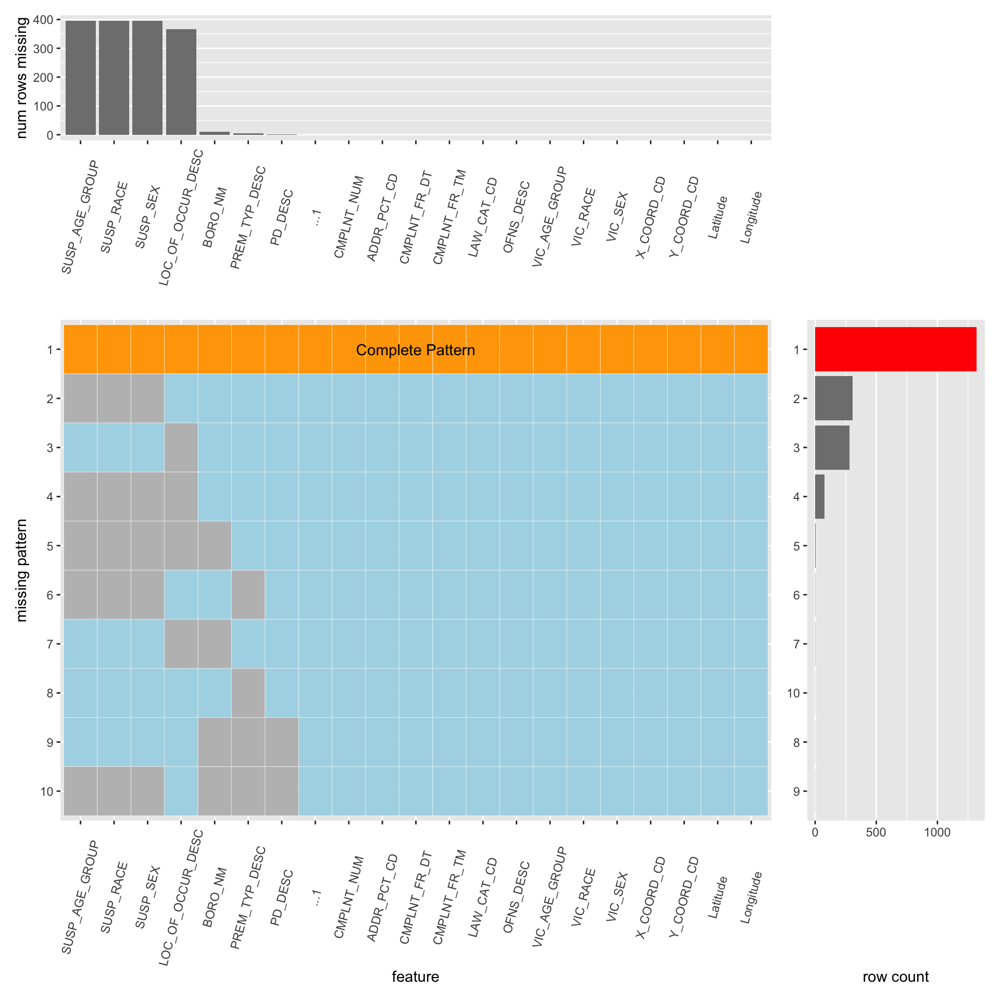
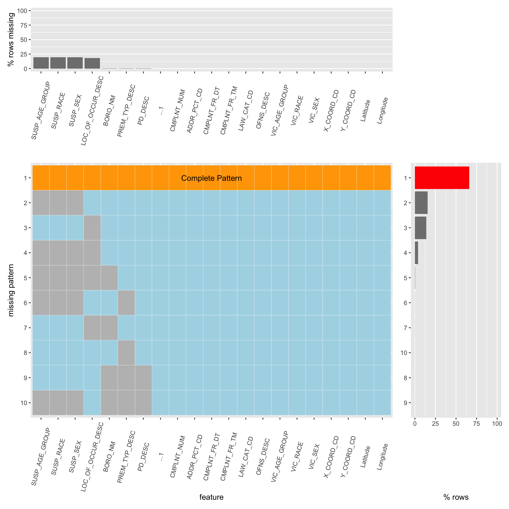

Chapter 4 Missing values
4.1 Visualize missing values
4.1.1 Missing Count

4.1.2 Missing Percentage

4.2 Analysis
4.2.1 Sampling
For our final project, we apply the missing pattern function to our dataset. Since we are having a very large dataset(millions of rows), we chose to sample a relatively smaller proportion(2000 rows) of original dataset to visualize its missing pattern, as it will be more efficient in terms of time and won’t cause loss of generity.
4.2.2 Overview
We have in total 20 columns in our dataset, and from the missing plot above we see that nearly 65% of the rows are complete, and of all the features that have missing values, the missing percent are all below 25%. This suggests desirable integrity of our dataset.
4.2.3 Feature
From the graph, we are having a total of 7 features that contain missing value, there are susp_age_group, susp_race, susp_sex, loc_of_occur_desc,boro_nm, perm_typ_desc, pd_desc. We can conclude from the layout that the first four are denoted as the top four missing features, each of them has approximately 25% of the values been noted as missing. The latter three feature doesn’t seem that important.
4.2.4 Missing Pattern
From the main plot, there are in total of 9 missing patterns, which first three missing patterns dominate the missing pattern plot, generally speaking, they can be categorized as three types, description of the biological appearance of the suspect, location of the accidents that occurred, and combination of previous two.
For the missing the biological description of the suspect, it actually makes sense, since it is expected to see in the reality that the suspect will cover his or her face, try his or her best to hide his or her biological appearance, to avoid being arrested by police.
For the missing of the location of the accidents that occurred, it makes sense too, since people tend to realize what happened after it’s already happened, like if something has been stolen, the victim probably realized way after it’s happened, and having a hard time to exact the location.
All the other missing patterns are almost ignorable.
4.2.5 Future Work
In our future work of processing missing values, we might choose between using imputation or taking them as a new category. We will determine it after further detailed exploration.